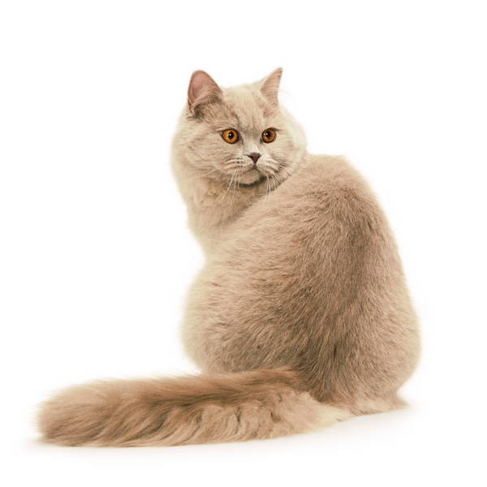

АБИССИНСКАЯ - ЭЛЕГАНТНАЯ КРАСАВИЦА С ЗОЛОТЫМИ БЛЕСТКАМИ В ГЛАЗАХ
короткошерстная
10
15
Могут быть очень ласковы, но только на своих условиях и по настроению. Как правило,
по своему характеру абиссинские кошки весьма активны, они стремятся принимать участие во всех домашних
делах. Могут быть очень ласковы, но только на своих условиях и по настроению. Необыкновенно обаятельны,
но иногда бывают очень озорными. Эти игривые, подвижные создания хорошо уживутся с любым другим домашним
животным, которое сможет стать им товарищем по играм. Они сильно привязываются к людям и стараются
всегда находиться рядом с ними. Все эти особенности характера и поведения абиссинской кошки не дадут ее
хозяину заскучать или почувствовать себя одиноким.
АВСТРАЛИЙСКАЯ ДЫМЧАТАЯ - ЗЕЛЕНОГЛАЗАЯ КРАСАВИЦА В ДЫМЧАТОМ ПЛАЩЕ
короткошерстная
10
15
Сообразительна, уравновешена и беззаботна. Австралийская дымчатая – очень
жизнерадостная и ласковая порода. Ее представители общительны, спокойны и
терпеливы. Именно эти черты характера позволяют австралийским дымчатым кошкам хорошо уживаться с детьми,
собаками и другими домашними животными. Они чрезвычайно сообразительны, уравновешены и беззаботны.
АЗИАТСКАЯ КОРОТКОШЕРСТНАЯ
короткошерстная
10
15
Сообразительна, решительна и очень любознательна.
АМЕРИКАНСКАЯ ДЛИННОШЕРСТНАЯ
длинношерстная
10
15
Ласковая, умная и общительная. Дружелюбный и покладистый характер американской
длинношерстной кошки делает ее желанным компаньоном как для одиноких людей, так и для семей.

АНГОРСКАЯ (ТУРЕЦКАЯ АНГОРА)
длинношерстная
10
15
Жизнерадостная и дружелюбная, с игривым нравом. В описании породы и характера
турецкой ангоры всегда отмечается, что эта кошка не только умна, но и чрезвычайно адаптивна. Кроме того,
она очень игрива и ласкова. Она подойдет для семьи с маленькими детьми и станет жизнерадостным
компаньоном для пожилых владельцев.

БАМБИНО - МАЛЫШ С ЖИВЫМ ХАРАКТЕРОМ
беcшерстная
10
15
Очень привязываются к своим владельцам и нуждаются в постоянном внимании и ласке
ДОНСКОЙ СФИНКС
беcшерстная
10
15
Донской сфинкс – кошка загадочная, элегантная и любознательная. Она активна,
чрезвычайно дружелюбна, сообразительна и ласкова, доброжелательна и очень преданна владельцу. Она не
требует сложного ухода, а характер у нее уравновешенный и мягкий. Эти животные проявляют живой интерес к
окружению и любят играть, самостоятельно изобретая все новые развлечения. При этом по своему характеру
донские сфинксы очень общительны и дружелюбны. Они с удовольствием показываются гостям и хорошо
уживаются с собаками и другими животными.
ПЕТЕРБУРГСКИЙ СФИНКС - ОБЩИТЕЛЬНЫЙ КОМПАНЬОН, ОДЕТЫЙ В ЗАМШУ ИЛИ ВЕЛЮР
беcшерстная
10
15
Любвеобильная и верная кошка. Петербургские сфинксы – очень умные, жизнерадостные и
активные по характеру кошки, сохраняющие игривость на протяжении всей жизни. Они крепко привязываются к
людям, любят, когда их гладят и держат на руках, и
терпеть не могут оставаться дома в одиночестве. По характеру петербургские сфинксы крайне общительны.
Они охотно отзываются на голос, превосходно ладят с другими кошками (лучше всего – с другими
ориентальными породами), собаками и детьми.

БРИТАНСКАЯ ДЛИННОШЕРСТНАЯ
длинношерстная
10
15
Дружелюбная, уравновешенная и миролюбивая.

ЙОРКСКАЯ ШОКОЛАДНАЯ
длинношерстная
10
15
Йоркская шоколадная кошка — прекрасный компаньон как для индивидуалиста, так и для
семьи с детьми. Они ласковы, обожают внимание и не дадут вам заскучать, если у вас есть для них хоть
немножко времени. Впрочем, они способны развлечь себя и сами. Хотя больше всего йорки любят быть рядом с
владельцем. Они обожают сидеть на руках или вовлекать хозяина в свои игры и «помогать» во всех домашних
и рабочих делах.